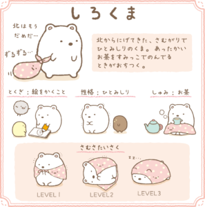
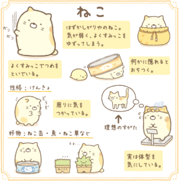
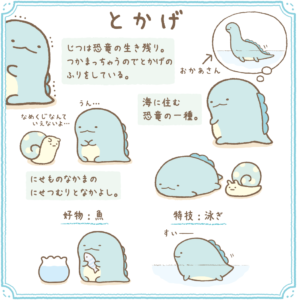
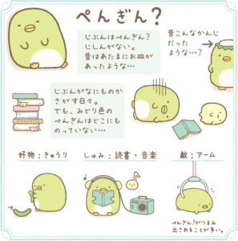

角落生物故事屋
這是一群總是偷偷躲在角落裡的好朋友


從北方逃跑而來怕冷又怕生的一隻熊,他是怕冷的北極熊。 在北極遇見環遊世界的真企鵝，真企鵝告訴他，南方有溫暖的小島， 所以白熊離開北邊，結果在某個角落遇到大家。 他是眾多角落生物裡最認真的。 喜歡乾淨，會主動打掃，如果弄髒角落他會很生氣。 擅長烹飪，畫畫，喜歡喝茶同咖啡，經常和企鵝？爭角落。 又經常作弄企鵝？。 |

一隻非常怕醜的貓。相當在意自己的體型。 希望得到理想的體型。 但和很多女生一樣，口裡說減肥，但總是吃吃吃。 心地非常善良，會主動讓角落給其他朋友。 她和小草是好朋友，小草是整個角落生物系列唯二正面的角色（另一個是上面的灰塵），夢想是開出花朵。 |

一開始只有四隻主角，他是最後新加上去的。 真正身份是一隻恐龍，因為怕被人知道真正身份會被人抓走， 所以騙大家說自己是一隻蜥蜴（沒有人知道他的真正身分）。 他的媽媽住在大海，經常想念媽媽。 他身邊的蝸牛朋友其實不是蝸牛，真正身分是鼻涕蟲。 因為他一直響往真正的蝸牛所以找個殼來扮蝸牛。 因為和恐龍一樣假裝的，所以他們非常要好。 蜥蜴和真正的蜥蜴朋友住在森林裡面，真正的蜥蜴不拘小節，所以一直也沒有留意他是假的。 |

他真正身分是一隻河童（但他不知道）。 不太肯定自己是不是一隻企鵝，所以經常看企鵝圖鑑，但都找不到綠色的企鵝。 所以他沒有什麼自信。 他很喜歡食青瓜，因為河童卷就是青瓜壽司。 他喜歡讀書和聽音樂，又經常作弄其他的小夥伴。 |
Smile is one of the most beautiful things in the world
|

炸豬排的邊邊。瘦肉1%加上肥油99%。 因為都是油,所以是被吃剩的。 炸豬排良伴：醬汁、芥末、袋子。 他是一大塊炸豬扒中最尖端的部位，因為太肥膩所以被人食剩。 身體99%是脂肪，只有鼻尖才是1%的肉。 他身邊有一隻天婦羅的炸蝦尾，因為太硬沒有人吃， 因為大家都是食剩的食物，所以他們是好朋友。 他們兩個的夢想就是被吃掉。也很討厭別人食剩東西。 他們不可以泡水，雖然喜歡溫泉但不能去浸。 有時會翻炸自己當作洗澡。 |